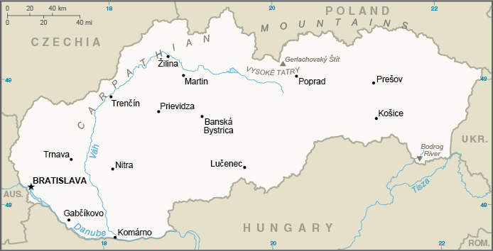
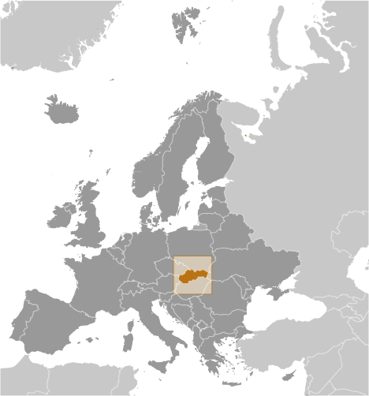
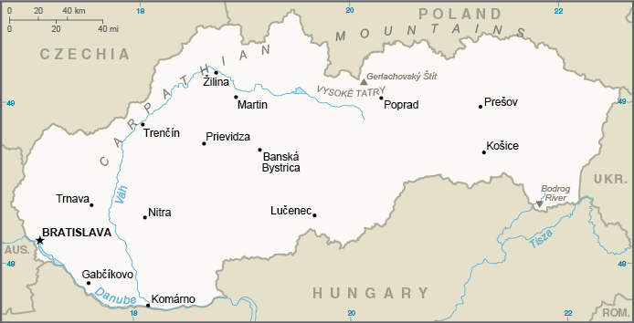
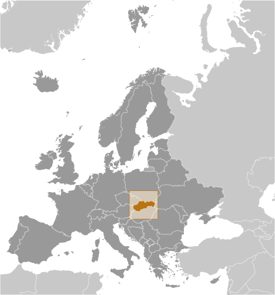

Introduction
Background
Slovakia traces its roots to the 9th century state of Great Moravia. Subsequently, the Slovaks became part of the Hungarian Kingdom, where they remained for the next 1,000 years. After the formation of the dual Austro-Hungarian monarchy in 1867, backlash to language and education policies favoring the use of Hungarian (Magyarization) encouraged the strengthening of Slovak nationalism and a cultivation of cultural ties with the closely related Czechs, who fell administratively under the Austrian half of the empire. After the dissolution of the Austro-Hungarian Empire at the close of World War I, the Slovaks joined the Czechs to form Czechoslovakia. The new state was envisioned as a nation with Czech and Slovak branches. During the interwar period, Slovak nationalist leaders pushed for autonomy within Czechoslovakia, and in 1939 Slovakia became an independent state created by and allied with Nazi Germany. Following World War II, Czechoslovakia was reconstituted and came under communist rule within Soviet-dominated Eastern Europe. In 1968, an invasion by Warsaw Pact troops ended the efforts of Czechoslovakia's leaders to liberalize communist rule and create "socialism with a human face," ushering in a period of repression known as "normalization." The peaceful "Velvet Revolution" swept the Communist Party from power at the end of 1989 and inaugurated a return to democratic rule and a market economy. On 1 January 1993, Czechoslovakia underwent a nonviolent "velvet divorce" into its two national components, Slovakia and the Czech Republic. Slovakia joined both NATO and the EU in the spring of 2004 and the euro zone on 1 January 2009.